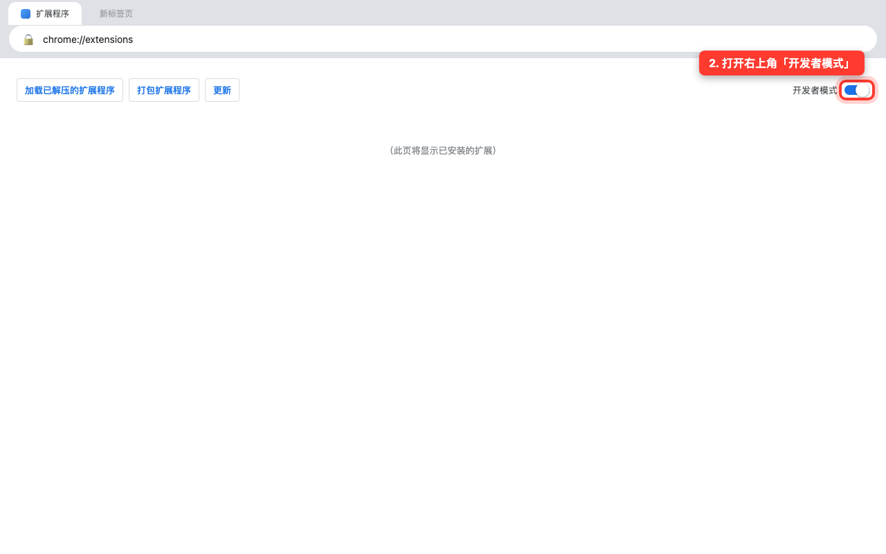
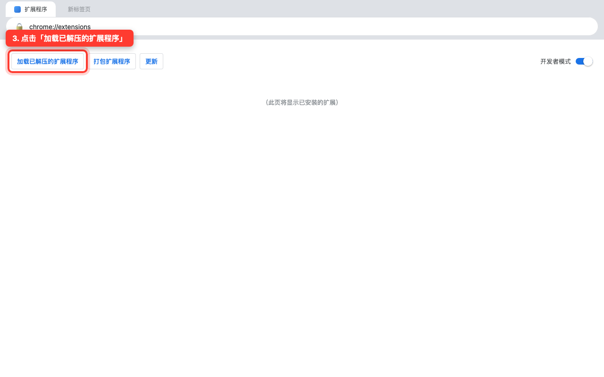
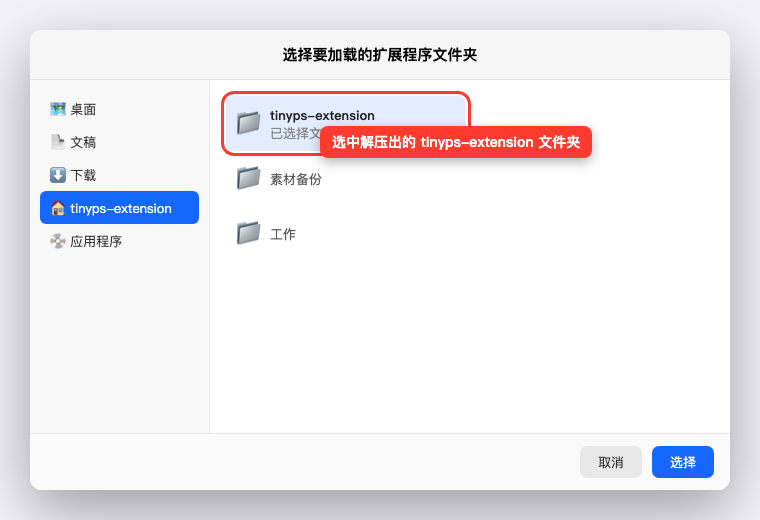
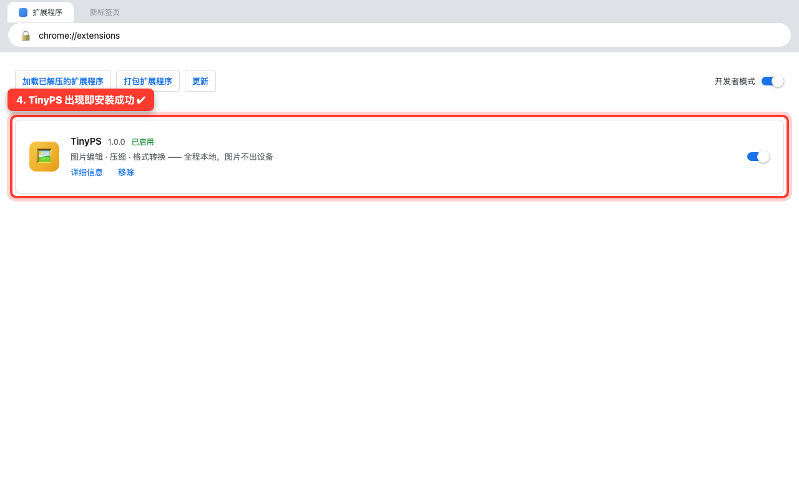

适用于无法访问 Chrome 应用商店的用户 · 全程约 2 分钟 · ← 返回首页
点击下载扩展包（zip，约 7MB），下载完成后双击解压，得到一个名为 tinyps-extension 的文件夹。请记住它存放的位置（通常在"下载"目录里）。
manifest.json 文件——这说明你解压对了。不要删掉或改名这个文件夹，扩展将一直从这里运行。在 Chrome 地址栏输入 chrome://extensions 并回车，进入扩展管理页面。然后打开右上角的「开发者模式」开关：

点击左上角的 「加载已解压的扩展程序」按钮：

在弹出的对话框中，选中第 1 步解压出的 tinyps-extension 文件夹（选中包含 manifest.json 的那一层），点击「选择」：

扩展列表中出现 TinyPS 卡片即安装成功。点击浏览器工具栏的拼图图标 🧩，把 TinyPS 固定到工具栏，以后点图标即可打开编辑器；在任意网页图片上右键还能直接"用 TinyPS 编辑图片"。

Chrome 每次启动都提示"请停用开发者模式扩展"？
这是 Chrome 对所有手动安装扩展的常规提醒，点"取消"忽略即可，不影响使用。
能关闭「开发者模式」吗？
不能。关闭后 TinyPS 会被 Chrome 停用，请保持开启。
有新版本怎么更新？
下载新版本 zip，删掉旧文件夹、解压新的，再到 chrome://extensions 重复第 3 步选中新文件夹即可（或点卡片上的"更新"）。
Edge 浏览器也这样装吗？
一样。把地址换成 edge://extensions，其余步骤完全相同。
卸载方法？
在 TinyPS 卡片上点「移除」，然后删除解压的文件夹。
chrome://extensions and turn on Developer mode (top-right). 3) Click Load unpacked (top-left) and select the unzipped tinyps-extension folder (the one containing manifest.json). 4) TinyPS appears in the list — pin it from the puzzle icon 🧩. Keep Developer mode on; to update, unzip a new package and load it again. Works the same in Edge via edge://extensions.